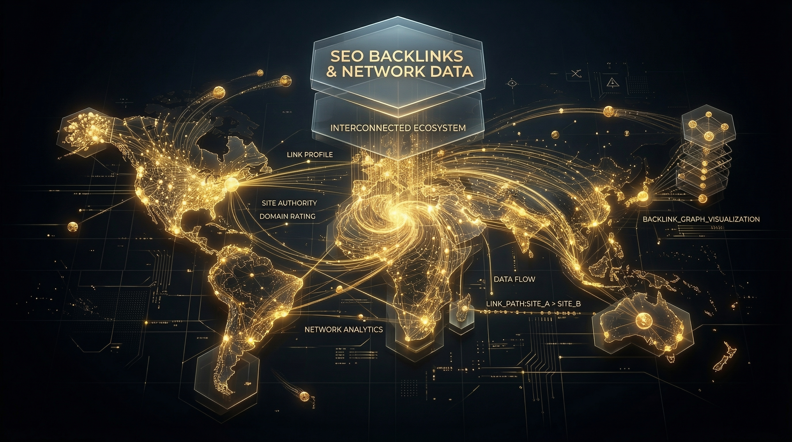

Your premium dashboard for optimizing site architecture, analyzing competitor data, and scaling your organic growth.

Analyze any domain's backlink profile instantly with our premium API integration to uncover hidden SEO strategies.
Launch Tool →The digital marketing landscape is undergoing a massive paradigm shift. For years, search engine optimization professionals, agency owners, and digital marketers were chained to bloated, monolithic software platforms. These platforms, while powerful, often came with a steep learning curve, exorbitant monthly subscription fees, and an overwhelming array of features that most users never even touched.
Today, the industry is pivoting toward a smarter, more agile solution: lightweight, premium micro-SaaS utilities. Here at Affilore, we are at the forefront of this revolution. We believe that accessing the best free SEO tools shouldn't require navigating complex interfaces or handing over your credit card information. Our platform is engineered to deliver enterprise-grade data instantly, empowering you to make data-driven decisions at the speed of thought.
Whether you are conducting an impromptu site audit during a client pitch, checking a competitor’s backlink profile on the fly, or optimizing your metadata, Affilore acts as your ultimate free SEO dashboard. By breaking down massive SEO platforms into individual, highly focused micro-tools, we give you the exact data you need, exactly when you need it—without the fluff.
In the fast-paced world of digital marketing, friction is the enemy of productivity. Traditional SEO software forces users through a tedious funnel: create an account, verify an email, log in, navigate a dashboard, set up a project, and wait for the software to crawl the web. By the time you get your data, your coffee is cold and your momentum is gone.
This is exactly why marketing utilities without login are rapidly becoming the gold standard for SEO professionals.
| Traditional SEO Platforms | Affilore's No-Login Micro-SaaS |
|---|---|
| Require accounts, passwords, and 2FA authentication. | Zero friction. Open the tool, paste a URL, and get instant data. |
| Restrict data behind paywalls and limited "freemium" trial credits. | Unlimited access to premium data points without artificial barriers. |
| Store your query history and client data on third-party servers. | Complete privacy. Conduct audits anonymously and securely. |
| Heavy, slow-loading dashboards that drain browser resources. | Lightning-fast, server-side processing for instantaneous results. |
When you eliminate the login barrier, you unlock a new level of operational agility. You can seamlessly bounce between checking server headers, extracting targeted keywords, and analyzing page speed without ever breaking your workflow. In an industry where speed and execution dictate rankings, having immediate access to premium data isn't just a convenience—it is a competitive necessity.
The most successful technical SEOs don't rely on a single software to do everything. Instead, they utilize a "toolbelt" approach. Just as a master carpenter selects specific, high-quality tools for different aspects of a build, a master marketer curates a stack of specialized utilities to craft a winning organic strategy.
Affilore is designed to be your digital toolbelt. By utilizing our suite as a comprehensive competitor analysis SaaS, you can piece together a multi-layered strategy that outmaneuvers the competition.
Your strategy begins with understanding what the market wants. By utilizing our keyword extraction and content analysis utilities, you can strip away the noise and discover the exact terms your competitors are targeting. You don't need a bulky platform to tell you what to write; you just need precise, raw data on search intent and keyword density.
Content cannot rank if search engine spiders cannot crawl it. The toolbelt approach integrates technical utilities—like redirect checkers, metadata extractors, and schema markup validators—to ensure your website's architecture is flawless. By treating technical SEO as an independent step powered by dedicated micro-tools, you ensure no broken links or missing tags slip through the cracks.
Finally, you deploy your off-page tools. Analyzing your competitors' inbound links gives you the blueprint for your own outreach campaigns. By isolating this task with a dedicated backlink checker, you can focus purely on authority-building metrics without being distracted by on-page warnings.
The SEO industry is built on data, but raw data is useless without context. Platforms like Ahrefs and Moz have long been considered the industry standard for SEO metrics. However, Affilore is democratizing this data, providing you with the exact same level of insight for free. Here is why your business absolutely needs to monitor these complex metrics.
| Metric | What It Is | Why Your Business Needs It |
|---|---|---|
| Domain Authority (DA) / Domain Rating (DR) | A logarithmic score (0-100) predicting how well a website will rank on search engine result pages (SERPs). | DA acts as a benchmark against your competitors. If your competitors have an average DA of 60 and yours is 20, you know you need a highly aggressive off-page strategy. It dictates resource allocation. |
| Backlink Profiles (Velocity & Quality) | The complete portfolio of external websites linking to your domain, analyzed by acquisition speed and source trust. | Backlinks are Google's primary ranking factor. Analyzing profiles allows you to identify toxic links that trigger algorithmic penalties, and uncover high-value PR opportunities your competitors are exploiting. |
| Technical SEO Audits | A comprehensive health check of your website's indexability, crawlability, and core web vitals. | Even the best content will fail if your site has canonical errors, slow server response times, or render-blocking JavaScript. Audits protect your revenue by ensuring Google can actually read your site. |
| Anchor Text Distribution | The ratio of the exact clickable words used in hyperlinks pointing back to your website. | Over-optimized anchor text (e.g., too many links saying "buy cheap shoes") will trigger a Google Penguin penalty. Monitoring this ensures a natural, penalty-proof link profile. |
By utilizing Affilore's tools, you aren't just looking at numbers; you are accessing the same caliber of intelligence that Fortune 500 companies pay thousands of dollars a month to acquire.
Navigating our category page is designed to be intuitive, but knowing exactly which tool to pull from your belt can exponentially increase your workflow efficiency. Here is an overview of how to maximize the specific utilities found in our free SEO dashboard:
Do not just look at your own site; use these tools primarily for competitive espionage. Enter the URL of the top-ranking page for your target keyword. Export the list of referring domains. Your goal is to systematically reach out to those exact same domains and offer them a superior piece of content to link to. This is how you siphon authority directly from your competitors.
Use these tools when auditing large e-commerce sites or sprawling blogs. Instead of manually inspecting the source code of dozens of pages, paste the URLs into our extractors to instantly verify that your Title Tags, Meta Descriptions, and Canonical Tags are perfectly optimized for target keywords and character limits.
When a client complains about a drop in traffic, start here. Use our HTTP header checkers and redirect tracing tools to ensure there are no infinite redirect loops or 404 errors destroying their crawl budget. These tools are the first line of defense in diagnosing catastrophic technical drops.
For active websites publishing new content regularly, a comprehensive technical SEO audit should be conducted at least once a quarter. However, micro-audits—such as checking the metadata of a newly published article or running a quick broken link check—should be done weekly. Utilizing lightweight, marketing utilities without login makes these weekly micro-audits fast and painless, ensuring technical errors are caught before they impact your organic traffic.
Absolutely. The fundamental data that powers search engine optimization—such as HTTP status codes, meta tags, visible on-page text, and public link graphs—is not exclusive to paid platforms. While massive paid platforms bundle this data into complex visual dashboards, Affilore's best free SEO tools extract and present the exact same raw data with greater speed. If you know how to interpret SEO metrics, our free micro-SaaS tools provide all the firepower you need without the bloated overhead costs.
A competitor analysis SaaS (Software as a Service) is a platform designed to reverse-engineer the digital marketing strategies of your business rivals. These tools allow you to input a competitor's domain and extract their most profitable keywords, uncover their backlink sources, and analyze their top-performing content. Affilore acts as a modular competitor analysis suite, allowing you to dissect rival strategies piece by piece for maximum clarity.
Google's algorithm treats backlinks as "votes of confidence" from the rest of the internet. A strong backlink profile signals to search engines that your content is authoritative, trustworthy, and valuable. However, it is not just about quantity; the quality, relevance, and semantic context of those links are critical. Monitoring your backlink profile helps you acquire high-value links while identifying and disavowing toxic, spammy links that could trigger a ranking penalty.
Selecting the right tools depends on your specific bottlenecks. If you are struggling with indexation, use a sitemap and robots.txt generator. If you need authority, focus on backlink checkers. Build your custom toolbelt based on your immediate marketing objectives.
The days of slow, expensive, and frustrating SEO software are over. You now possess the knowledge to execute a high-level, integrated marketing strategy using precision micro-SaaS utilities.
Do not let your competitors out-optimize you while you are stuck waiting for a dashboard to load. Scroll up, explore the Affilore SEO & Marketing Tools category, choose your first utility, and start reverse-engineering your path to the number one spot on Google today!